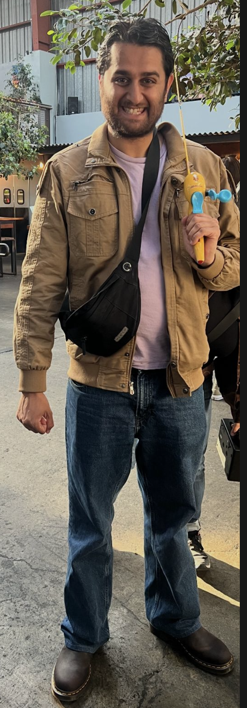
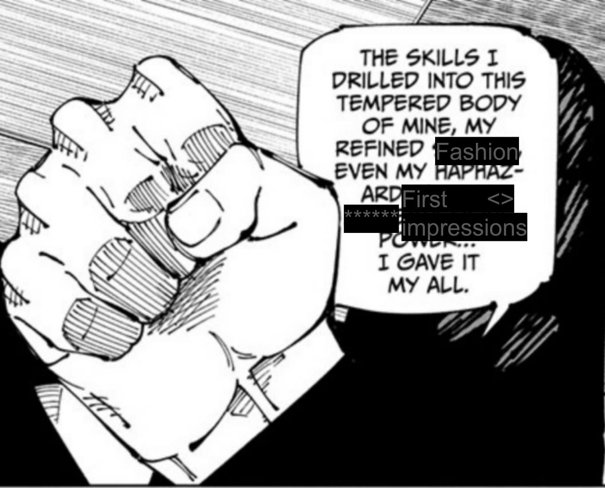
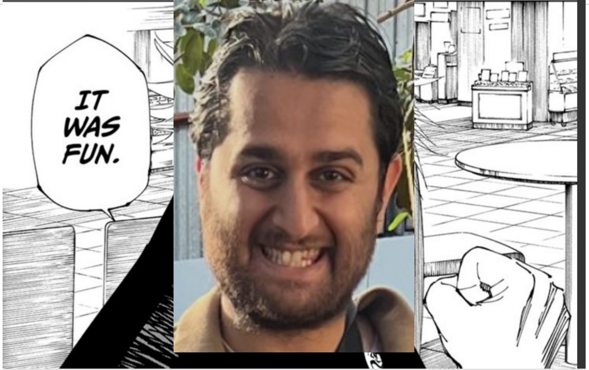
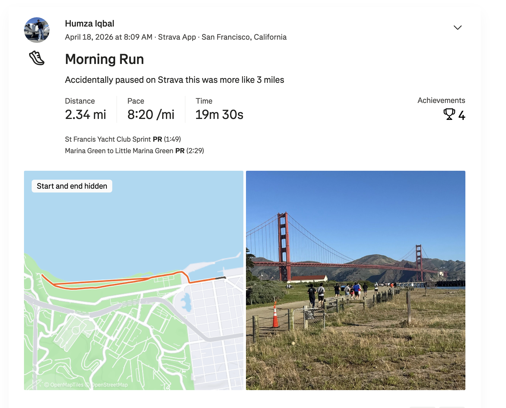
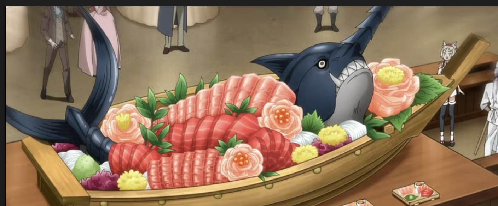
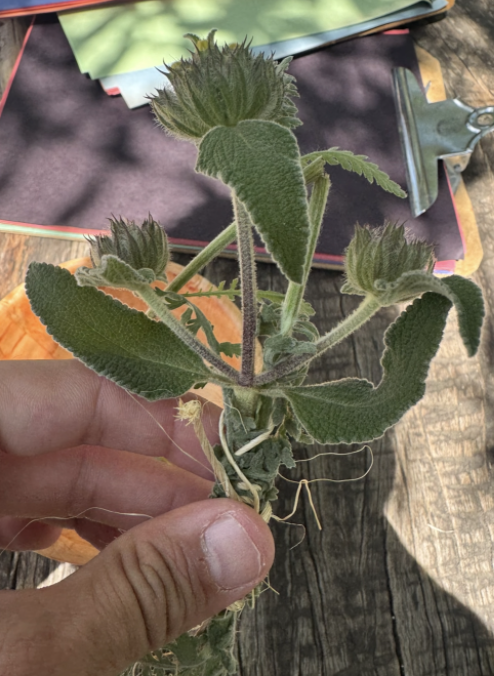

Shoutouts
Happy birthday to “The Twitch Streamer”. To be honest I never thought I’d see the day where I get invited to the birthday party of a bar tender where I’m a regular at said bar. I really appreciate ya.
Congrats to “The Boxer” for eating 7 cans of beans and becoming the new bean king! (More on that later)
Congrats to “The Notetaker” for his 200th trash pickup!! This is a big accomplishment and it speaks to your general dedication to volunteering which is inspiring to see.
Monday
Today after work I went to a joint birthday party for “The Twitch Streamer,” his girlfriend, and someone else I didn’t know. This birthday party happened to be at Fermentation Lab in Japantown. There were a lot of regulars from Thursday bar night there including “The Philosopher,” “The Mosher,” “That’s Nuts”.
Amusingly there was a split in fashion between those of us who are friends with “The Twitch Streamer” and those who are friends with his girlfriend. The former group definitely dressed more casually while the latter definitely glammed it up.
There was some REALLY good fried banana as part of the dinner menu at this party which was awesome.
Tuesday
Today after work I started a series of classes on how SF government works. The classes are offered by an organization called Civilab (https://www.writing.civlab.org/p/how-sf-gov-works-apply-cohort8). This will be a 7 week series where each Tuesday I go and essentially attend a lecture on how SF government works. Each week I’ll have homework and need to do a capstone project of a sort where I report on some aspect of SF government.
For this week we mainly covered the overall structure of SF government. One interesting quirk about SF is that its both a city and a county meaning that the full official name is “The City and County of SF”. As a result we have some mismash of city and county government. For example we have a City Attorney, a District Attorney, and a Public Defender covering differing legal aspects. In case your curious the City Attorney is like the attorney of the city making sure laws are constitutional, the District Attorney who handles criminal prosecutions on the county's behalf, and the Public Defender who defends.
We took a deep dive into how power broadly works from the elected officials, the departments, and the commissions that oversee the departments. I already am learning a lot about overall government structure which is actually kinda cool.
I’m told that by the end of this class I will be in the top 1% of SF Civics knowledge which I hope will make me a more informed voter in the coming elections.
Wednesday
Today I skipped Midnight Runners because at the last minute me and “The Fisherman” learned we got off the wait list for a pitch-my-friend dating event. It was a last minute scramble making sure that my presentation on why you should date “The Fisherman” was up to snuff. She’s gonna perform the song she wrote so I can’t lag behind too much. Obviously nothing I do would measure up but I still had to try my best.
I updated the presentation since first writing it many months ago, and trying to think of clever and creative ways to engage the audience.
Thursday
After work I get ready for the aforementioned pitch event. I decided to pull out all the stops today. I asked Claude to help me pick an outfit to make sure I pick the best one. I pull out my Doc Martins shoes which look good but feel quite tight having not been broken in. And I go for cologne just to really seal the deal.

Only ugly not fugly
I freshen up and go to Southern Pacific Brewing company where I meet up with “The Fisherman” and “The Hombre” who happened to be in town for a conference. Originally me and “The Fisherman” were planning to grab dinner with him and some other people but we changed our plans last minute since we got off the waitlist for this event.
We invited a bunch of people to come watch, including “The Quant,” “This little piggie didn’t go to the slaughterhouse,” “Trash Queen,” “The Rugby Player,” and “Sustainably Fashionable”. “The Fisherman” is actually the first pitch of the night, specifically chosen because the organizer thought that she would do something awesome to kick the night off. She wasn’t wrong of course, rather she didn’t know just how right she would be. The song goes great and I’m really happy she got the chance to perform it.
After her presentation I once again knew I had to make sure mine was the second best of the night since I couldn’t beat that. During all the other pitches I was more focused on that than anything else here. Last minute thinking of what other jokes I could put in, how else could I engage the audience. One thing I did have going for me was that I had the idea earlier to buy a kids fishing rod and use it during her pitch. I’d throw it into the audience and say something like “Who is our fisherman going to catch next?” which I thought would be fun and creative.
There is a break between groups of presentations with my pitch being in the group after the break. During the break I found a cute girl to talk to and hit her up for a little bit. I had a bit of a rough start but we got a conversation going. She works as a biopharmacist at Genentech and she tells me about how her job is largely designing drugs with a focus on making sure they get incorporated into the body and not just dissolved out which I thought was super cool. One thing I tend to do in these situations is sometimes I ask so many questions rapid fire out of nervousness so I intentionally let the conversation pause for a bit so she doesn’t feel overwhelmed. At one point I wanted to ask for her # but then her friend came and joined the conversation which I wasn’t quite sure how to handle. I kept talking to both of them which was a fine conversation in and of itself but it didn’t feel conducive to asking for a date. I was thinking about what to do when the break ended and it was time for me to pitch “The Fisherman”.
Finally it's time for my pitch. Overall I think it went well. I got quite a bit of laughs where I intended and even some laughs where I didn’t. People thought it was really funny when I told “The Fisherman” “next slide” in a dry corporate sounding voice to contrast my high energy pitch of her, but that was honestly unintentional. The fishing rod joke went well. I also made a rap of her where I used the last line as an excuse for everyone to chant her name but that went less well. “The Quant” and “This little piggie didn’t go to the slaughterhouse” said I did quite well which was good. Even that I had the vibes of a comedian which makes me relieved that I haven’t lost my standup skills after having not done it for a little while. I’m glad I could do something that at least respects the effort “The Fisherman” put in even if I couldn’t match it.


After my pitch I tried again to find the girl I was talking to earlier to see if maybe I could hit her up some more. I was told she laughed at some of the jokes I made so maybe this puts me in a better light. Sadly during the break I couldn’t find her at all. Maybe just left. There was one other girl I was interested in but I got her instagram from a pitch already and I wasn’t waiting around another 40 minutes just for a chance to talk with her so I left.
As I was leaving I was approached by someone who saw me at the last event and recommended I talk to her friend … who is a matchmaker. A little bit predatory but OK I suppose. I decide I’ll reach out because why not right?
I went to bar night whereI met up with “The Mosher,” “That’s nuts,” “The Finer Things,” “The Best,” and “That’s nuts’” boyfriend. We hung out and I got to unwind after the an event like that where I’m on guard about my impressions and I can just shoot the shit freely.
At this point I figure it might be good to reflect on how I’ve progressed since the last pitch event. Overall I think I’ve improved quite a bit. At the last event there was another girl I was interested in and I made the mistake of using one of my terrorist jokes there which I now know was a bad move. I think a lot more about first impression stuff than I did before. I didn’t ask “What’s something cool or interesting about you that people wouldn’t expect?” I made sure to wear my best clothes, tried to make her the center of attention. I did everything I think I should have. Perhaps she just wasn’t interested which is fine. Maybe that's why her friend came over since her friend could sense the situation and wanted to help out. If so, that’s a good friend. Guess I just gotta keep trying.
That being said I still feel like I have a long way to go. I still needed Claude to help me finalize my outfit, my arms are still spindly and I don’t think I have *IT* yet. I think some (no a lot) of my friends are a lot better at this than I am and I still need to get better. Better pictures, better looks. To be honest I oscillate some days between feeling good that I improved so much and shame that I needed so much help to begin with. I know the latter isn’t a productive mindset but it is how my monkeybrain feels sometimes.
On the plus side I’ve been told by my personal trainer that I’m getting stronger so maybe soon my arms will reflect that
Friday
Today after work “The Boxer” attempted the bean challenge in a bid to become the 7 can man. Before that I had to go and get the beans to make it possible. He wanted black beans, and per bean challenge regulations I had to find cans of beans that were exactly 439g. I could find plenty regulation sized cans but none that were the exact type of bean. I could have opted to go for a different type of bean but I stand by the fact that anyone attempting the challenge should get whatever type they want.
I had to go to 4 separate stores to find them but in the end the Goya black beans cans were there.
In between looking for beans I have a call with the matchmaker who describes the service to me. She says she will do coaching, take pictures, and introduce me to matches in the network. It’s 6 months for 10K which I don’t know if I wanna pay. “The Quant” pointed out that I could definitely afford it and I should consider it but I still wanna maximize the value I can get from what I’m already doing before considering such things.
Thanks to “Granola Girlie” for hosting. We were joined by “The Juggler,” “The Quant,” and a late appearance from “The Notetaker”. The challenge itself was quite the treat. Originally “The Boxer” thought we would all be eating beans from the 7 cans only to realize he was doing this alone. “Granola Girlie” was eyeing some of the beans thinking she would get some of the leftovers for dessert. Would she get the aforementioned dessert? Well wait and see.
For any new readers I should lay out the rules of the challenge. The most obvious is that you must eat every bean to finish. Second all cans are rounded down, so if you eat 3.93 cans that only counts as 3 (I’m still salty about that one because I DEFINITELY ate closer to 4 cans than 3 >:( ), Third there is no time limit but you can’t use the restroom in the middle.
For some more context I attempted this challenge twice in the prenewsletter days and the best I got was officially 3 cans (though both were closer to 4 but remember rule 2 above). One thing I wish I knew was that you could drain the can to limit exposure to bean juice. And I wish I didn’t eat before I did it.
“The Boxer” gets through the first few cans in roughly 4-5 minutes per can feeling pretty strong. By cans 4-5 it takes closer to 18 minutes per can. At this point he already beat me and “The Philosopher” in terms of what he could do. All that was left was to clear “The Juggler” and “Granola Girlie”. Eventually he makes it to the last can. He starts walking around while eating to get some more energy into him. All the while he complains that he is dying but he makes progress. Eventually though he clears the last can and becomes the bean king. Sorry “Granola Girlie” no dessert for you today. It was an amazing accomplishment that inspired me to try again. Maybe if I lock in, maybe if I drain the cans, and maybe if I don’t eat a burrito beforehand I too can become the bean king.
Saturday
The day begins with Marina Run Club with a brief chat with “Top of the Rope” who is friends with someone I went to college with. Not someone I know well but someone I do know. I thought briefly about talking to this guy but decided against it when I realized I can’t really be like “Yo its so good to see you!” when I didn’t really mean it. I was sort of adjacently friends with this guy in the loose sense of knowing his group of friends but never making it past small talk 95% of the time. I could have tried more but opted to instead talk to other people I have known less long but infinitely better.
The run itself was good, nothing too notable but it was fun.

After the run I go to trash pickup with … people. There are definitely some named characters but I can’t remember them for the life of me. I guess this is what happens when you put off the newsletter for 5 days. I can tell you that “The Notetaker” was not there today because of a NERT drill he was a part of (“The Shadow Brigade” I know you’d comment if I forgot to mention him so there ya go).
Unfortunately I couldn’t stick around too long at trash pickup today. Instead I hung out with the Google Group today featuring “The Enabler,” “La Tacqueria Royalty,” “Breaking it Down,” “Always up for disc-ussion,” and some others who I don’t know well enough to give a nickname to. I guess one of them is also a dentist like “The Dentist” but not “The Dentist”. And a couple others I don’t know how to describe well. We go to Japantown and buy a bunch of stuff from the Nijiya market and make homemade sushi. Well ok other people make homemade sushi I hang out at someones apartment and watch Coachella on TV. I thought Coachella was cool and all but I can see that I probably would not want to actually go myself. I think watching on TV is about the level I’m at.
Given that I don’t eat fish I decide to take more of a supervisory role when it comes to eating said sushi. The second dentist wanted to take a picture pairing the sushi with an anime that also had sushi for the vibes which I thought was a fun idea.

Imagine there is some homemade sushi with this and you can nail down what the vibes of the picture looked like.
After walking around the cherry blossom festival I bid adieu and met up with “Top of the Rope” and one of her friends and we walked around for a while. We went to Alamo Square and laid down in the park. I definitely appreciate the friends I meet through “Top of the Rope” as they are often eclectic in their own unique ways. With this friend we talked about the merits of East vs West coast, what its like to do ballet, and incredibly progressive newspapers. It was chill and fun. I went to Popeyes immediately afterwards to see if I could get the special One Piece meal https://news.popeyes.com/blog-posts/popeyes-r-sets-sail-with-one-piece-with-an-epic-anime-inspired-menu-and-collectibles-drop but sadly they don’t have it at the location here. BIG SAD.
From there I went home and worked on my government class homework. I had to write a post with info about the mayor, my district in the board of supervisors, and information about one other elected official. It’s public so if anyone wants to see it it’s here https://humzaiqbal12345.substack.com/p/class-1-homework
Sunday
Today I did trash pickup with “The Notetaker,” “The Ravenkeeper,” “The Ravenkeeper’s” friends, and a Canadian who knew “The Philosopher” but not from college. This Canadian actually worked with one of “The Philosopher’s” current coworkers who doesn’t get a nickname here but I guess I’ll identify as being a regular at the Northbeach bar scene. According to said Canadian apparently me and “The Philosopher" have similar demeanors and senses of humor which feels really insulting to “The Philosopher” because he is actually pretty funny.
After trash pickup I went to an earth day festival with two other people who I know but not super well. One of them went to college with “The Yogi” and “Fidel Castro’s jacked grandson” the other … I don’t know how to describe. She’s nice but I just … don’t know much about her in particular. Hmm. Anyway the festival itself was fun. We got to hang out in a garden and make bouquets of flowers

After the festival I went home and … did nothing. I’ll admit I could have used the time more productively by writing more of the newsletter so its not 5 days late but sadly I was lazy which sucks.
Later I got KBBQ with “The Quant” which was a fun catchup. Nothing major happened but it’s always nice to get KBBQ and just hang out. Afterwards I go home and do a bit of company work but no newsletter.